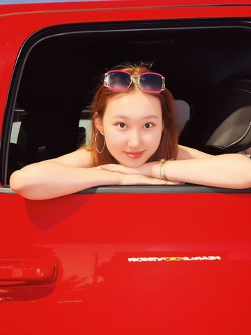

基本信息
请上传一张自己的照片，普通的生活照就可以！（只是为了面试的时候我们可以把你认出来）

查看原图
查看原图
通用问题部分
为什么想要加入CSSA？
首先我希望通过实践锻炼自己提升我的个人能力从高中起我就是学生会成员，3年的时间里我感受到责任和行动带给我宝贵经验但更多是作为高中生的限制。我希望发挥自己专长在这样一个对于大多学生来说未知的环境为他们提供有价值、务实的帮助。我想用热情和行动在未来的几年种好每一朵花，我也相信负责实干皆因诚挚包容所以共赢
你心目中CSSA是个什么样的组织？
充满活力温暖又有力的共同体。温暖是连接在外留学的游子和故乡文化，作为一个纽带让每个身处异乡的国人感受到归属感。不仅是帮助新生更快适应校园，更是策划每一次完美的活动，我们在春晚等其他活动上展现出青年特有的活力。有力在我们为成员提供切实的支持，是强大的后盾——不惧困难为各种挑战都随时充满能量的“对抗”
加入CSSA之后，你最想在康奈尔校园内实现的事情是什么？
我想建立一种提问箱系统，让新生询问也不会使我们忽略掉问题。同时，我想制作关于cssa的视频和故事，记录18-22的我们。让更多人了解我们具体会干什么，在真实的场景下记录我们的工作/日常/经历，避免刻板印象或误解。
秘书处
如果让你选择未来一周的工作，你想做什么？
整理一份混乱的历年档案库
当别人第一次见到你时，他们会说“哇，你居然___！”（请填空）
会这么仔细和负责
某天深夜，一位新生在微信上非常焦急地询问：‘我的航班延误了了，接机联系不上怎么办？现在半夜一个人在机场好害怕...’
作为小助手值班的你，会如何回复？请写出具体回应（注意：你无法直接解决问题，但需要让TA感到安心）。
同学你好，我是CSSA值班的小助手。看到你的消息了。深夜一个人在机场确实会害怕，但别慌，我们一起来想办法解决：请先留在机场亮堂的休息区，附近有工作人员或警察亭的话尽量靠近他们，要安全第一哦。同时把航班号、当前位置拍照发到接机微信群，如果20分钟后仍无回应，建议先打车到学校。建议地点rpcc，那边24小时有保安和学生。上车前请把车牌发我哦。
你希望从秘书处的伙伴们和这份工作中获得什么？（比如：深厚的友谊？一份完美的简历？超硬核的技能？还是单纯的快乐？）
深厚的友谊和加强对细节的执着处理
（可选）有人说“我们属于我们投入过心力的地方”。你希望自己在秘书处留下怎样的痕迹？
我希望不仅是留下特定的具体活动或成果，而是一种搞笑了温暖的工作氛围，是可以持之以恒长久留下的痕迹。比如推动建立更透明的任务流程，信息传递更顺城，或者主动倾听，即使反馈习惯等，让每位成员的声音都能被听见和重视，得到反馈，有一种“有她在，这件事会很稳妥”的感觉。
（可选） 秘书处传统：每次团建都要尝试一个奇奇怪怪的新活动。你有什么离谱但有趣的idea吗？（多奇怪都行）
随机语言配音哈哈哈哈，或者答非所问。
第一志愿为什么选择这个部门？
我觉得我是个很负责的人，我希望用热情和行动完善每次结果
内联部
第二志愿为什么选择这个部门？
我性格外向对组织活动充满热情在我看来精彩的活动不仅是娱乐更是连接彼此的纽带通过策划破冰晚会节日庆典或部门联谊我能为大家营造轻松愉快的交流氛围帮助成员增进了解建立信任这份由活动带来的凝聚力，能显著提升团队归属感促进跨部门协作。我想成为那个点燃气氛用执行力连能让所有人记住的精彩活动。
是否接受部门调剂？
是